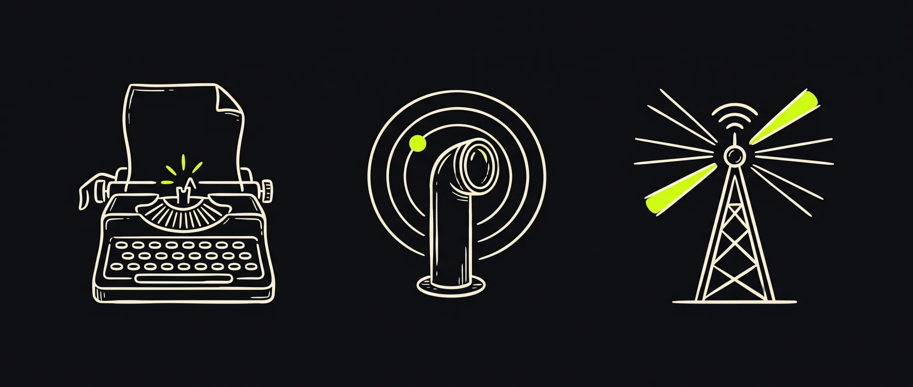

Marketing,
engineered.
I audit your distribution, then build and run the autonomous systems your marketing team would build — content pipelines, publishing, monitoring, competitive intelligence. At a fraction of the cost, fully owned by you.
Marketing in 2026 is mostly engineering and agent ops. I treat it that way.
Three pipelines.
One engine.
Every Freddy build is the same architecture in different shapes. Three autonomous systems that read, decide, and ship — driven by the same audit and the same operator.

Content engines.
Autonomous content for X, LinkedIn, blog, email. Keyword + competitor mining → angle generation → drafts → AI judges → publish. Audit trail on every decision.
Competitive intelligence.
Continuous scan of competitors, mentions, market shifts. Ad libraries, news, social, search results, reddit, SEO movement. Surfaced as ranked signals you can act on — not a dashboard of noise.
Distribution + reporting.
Multi-platform publishing with native formatting. Scheduled, tracked, A/B'd. Performance tied back to specific bets — so every report names what worked and what didn't.
Each pipeline is its own scope. Audit decides which you need — usually two of three, sometimes all three.
Two phases.
Each stands alone.
Fixed scope per phase. Fixed price per phase. You exit after either one and the work holds up. No 12-month retainers, no escalation ladders.
Audit
I map your distribution surface. Where customers find you. Where competitors beat you. Where the cheapest distance between you and more revenue is.
- + SEO snapshot · 1000+ keywords
- + Competitor ad teardown
- + Social + news mention landscape
- + Prioritized plan + raw JSONL data
Operate
I build the engines your audit calls for, then keep them pointed at the right signal as systems drift and markets move. You own the source, the keys, and the data.
- + Pipelines built to your audit's spec
- + Weekly optimization passes
- + Monthly reports · quarterly strategy review
- + Exportable: self-host if you ever want to
- + 3mo minimum · 30d cancel
From email to running system
in about four weeks.
No discovery decks, no scoping calls, no Statements of Work. You send a domain and a paragraph. I send back when the audit starts.
You email me your URL and one paragraph about your setup. I reply same-day with a scope estimate and the next available audit slot. No call required to get started.
SEO snapshot · competitor ad teardown · social and news mention landscape · share-of-voice math · content quality scan · technical surface. Findings ranked by leverage, with a build-or-pass call for each pipeline you might run.
Source goes to a repo in your name. Keys in your name. Encrypted secrets, audit logs, cost ledger from day one. Each pipeline ships with runbooks and a README a mid-level engineer can read. You can self-host from this point if you ever want to.
Pipelines online. Weekly optimization passes. Monthly performance reports tied back to specific bets. Quarterly strategy review. Systems self-improve under oversight — pipelines learn from each run and the next one starts smarter.
You've done this with an agency.
It doesn't have to be that.
| Dimension | Traditional agency | Freddy |
|---|---|---|
| Headcount on your work | 5–15 humans, account managers, slides | 1–2 engineers + autonomous agents |
| Monthly spend | $15K – $60K retainer | $2K – $10K / month |
| Iteration speed | Weeks per change (approval cycles) | Hours per change |
| Reporting | Curated slides, monthly | Static portal · raw JSONL · live |
| What you actually own | PowerPoints. Dashboards. Reports. | Source code · all data · all keys |
| When we part ways | Marketing stops | You keep running the systems |
Three categories.
Same architecture, different shapes.
Distribution looks different depending on who's hunting whom — engineer-buyers, judgment-buyers, regulated audiences. The engine doesn't change. The pipelines on it do.
Series-A to C founders.
Technical-buyer audiences who research before they ever talk to sales. Long-form engineering content, comparison pieces, technical case studies, search-rank defense, share-of-voice tracking, competitor launch alerts.
Clinics + practices.
Regulated audiences hunting for trust signals. Local-SEO defense, treatment-information content, review-platform monitoring, patient-question mining from forums. Compliance-aware by default.
Boutique firms.
Judgment-buyers hiring on perceived expertise. Thought-leadership content engines, regulation and ruling monitoring, competitor partner-move tracking. Often paired with a quarterly market briefing.
Outside these three? The audit decides if there's a fit. Categories aren't gates — they're the shapes that have shipped.
A message from the founder.
JR Noszczyk. Founder + builder. Built the AI systems that do the work of a marketing department — content, publishing, competitive intelligence, monitoring — first shipped as Freddy SaaS to paying users, now the same engine runs behind per-engagement builds.
Freddy the agency is the same engine, priced per engagement instead of per seat. Currently running distribution for a dermatology clinic and a legal firm, both in Europe.
Six is the maximum number of operate clients I take at once. Math: a week of attention per client per month, two weeks for new-client ramp, two weeks for slack. If I'm full, you go on the list.
Answered in advance.
01 what does freddy actually do? ›
02 why not just hire an agency? ›
03 can one person really replace a marketing team? ›
04 why so cheap? what's the catch? ›
05 bus factor — what if you disappear? ›
06 isn't this just chatgpt with extra steps? ›
07 what if the audit finds nothing? ›
08 do I have to continue after the audit? ›
Start with
an audit.
Two weeks. From $1,000. Refunded if it doesn't surface three specific distribution gaps and a plan to close them. Email me your domain and one paragraph about your setup.
No campaigns· No calendars· No decks· No account managers
Book audit →Reply within 24 hours · noszczykai@gmail.com